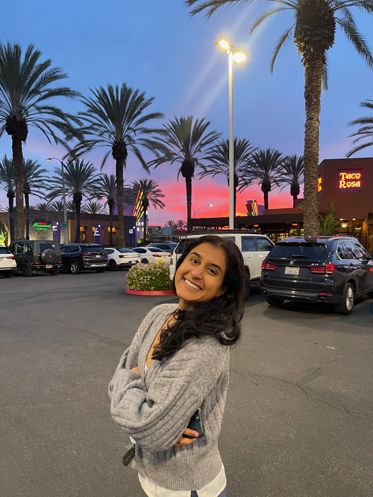
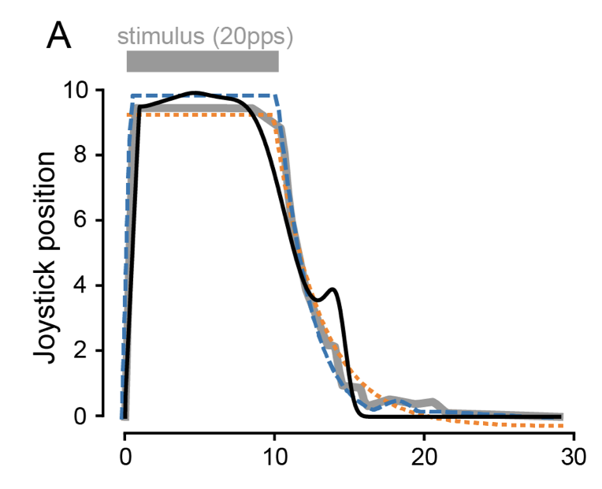

|
Laya Pullela I'm a joint BS/MS student at UC Santa Barbara in the College of Creative Studies. At UCSB, I am a research assistant and a ULA. From 2022-2024 in the UCSB Bionic Vision Lab advised by Prof. Michael Beyeler. I am now a research assistant at the Yao Qin Lab in the ECE department at UCSB, where I study multimodal learning, in particular for healthcare applications. |
 |
{kind=link}
ResearchI'm interested in computer vision, deep learning, generative AI, and image processing. Most of my research is about inferring the physical world (shape, motion, color, light, etc) from images, usually with radiance fields. Some papers are highlighted. |
|

|
Predicting the Temporal Dynamics of Prosthetic Vision
Yuchen Hou*, Laya Pullela*, Jiaxin Su, Sriya Aluru, Shivani Sista, Xiankun Lu, and Michael Beyeler * denotes first author and equal contribution IEEE, EMBC Conference, 2024 arXiv Modeling and predicting time courses for patients using prosthetic retinal devices. Used Fourier coeficients to parametrize time courses, beating SOTA models in predictive capabilities by ~30%. |

|
NUTRIBENCH: A Dataset for Evaluating Large Language Models on Nutrition Estimation from Meal Descriptions
Andong Hua, Mehak Dhaliwal, Laya Pullela, Ryan Burke, and Yao Qin ICLR Conference, 2025 project page / arXiv The dataset consists of 11,857 meal descriptions annotated with macro-nutrient labels, including carbohydrates, proteins, fats, and calories. NutriBench can be used to evaluate and benchmark Large Language Models (LLMs) on the task of nutrition estimation. |
Miscellanea |
|
Feel free to steal this website's source code. Do not scrape the HTML from this page itself, as it includes analytics tags that you do not want on your own website — use the github code instead. Also, consider using Leonid Keselman's Jekyll fork of this page. |